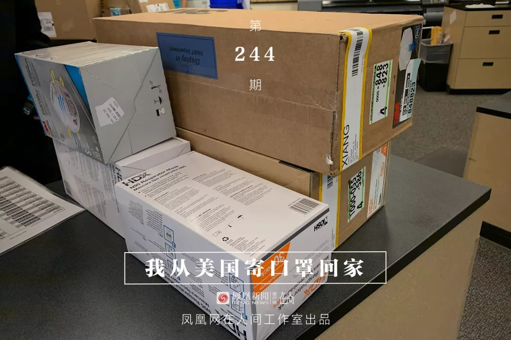
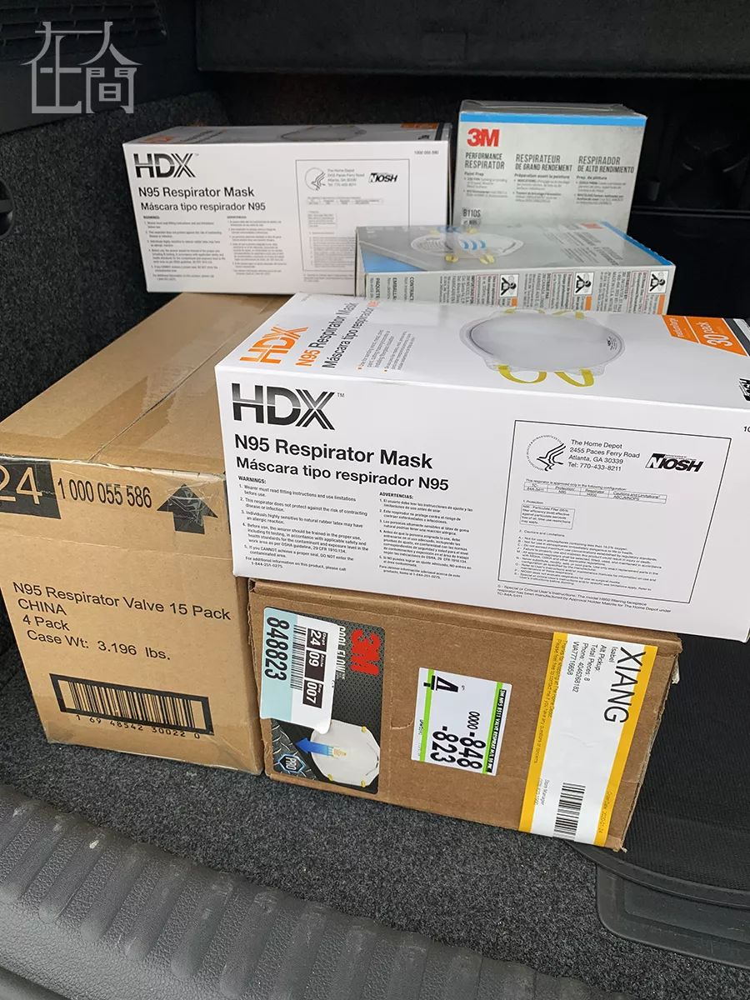
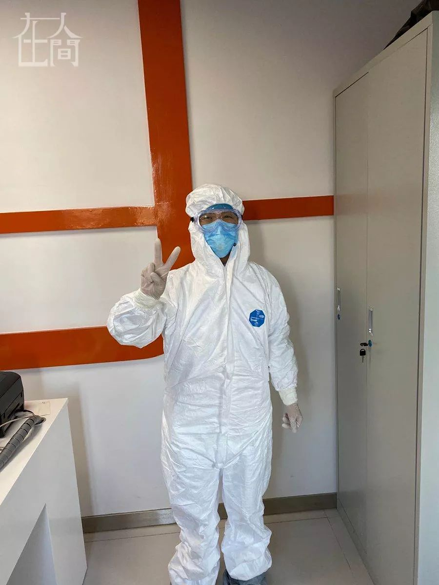

他们在海外找口罩，遭遇价格飞涨、临时毁约、“无间道”抢购
原文链接 备份链接 图片来源：视觉中国 记者 ：赵孟 “ 面对价格飞涨、临时毁约，甚至“无间道”抢购等突发情况，财政部专门发文要求各地简化采购程序，建立采购“绿色通道”。在专家看来，此举有望逐步理顺海外采购工作，有效帮助国内医护物资供应。 …


凤凰新闻客户端 凤凰网在人间工作室出品
我家在湖北襄阳，妈妈是襄阳中心医院的医生。疫情发生以来，截至2月17日，襄阳新冠肺炎确诊病例累计1155例，在湖北省排名第七位。
我住在美国华盛顿。
1月21号，我给妈妈打电话，想到那时报道的零星的湖北疫情，顺口问了一句，“家里面怎么样？”。没想到她竟然压低声音说：“很严重了！很多还没有确诊出来，但是我们在医院都知道的！”
我问她防护物资够不够，她说都够用，不需要我担心。挂了电话，我也觉得自己多虑了，医院是最不缺医疗物资的地方了，从小家里的棉签、酒精、棉片什么的都多得用不完。
想着过两周要去旧金山出差，我打开亚马逊，准备买一包口罩给自己用。令人惊讶的是，好几个商家都显示缺货。买口罩时，还有商家推荐医疗防护服。我笑了，还截屏跟朋友发消息说，这是准备去打劫吗？
一夜之间，关于武汉疫情的报道突然就变多了。武汉1月23号封城。
24号一大早，看到妈妈发来微信，希望我最好还是在美国买N95口罩寄回去。
我赶紧从床上爬起来，打开电脑。
没想到亚马逊口罩全部售罄，最快发货也要等到2月以后。家门口的药店也买不到，店员告诉我网上显示也没什么库存了。
我想起来前两天同事提到家装与建材店家得宝(The home depot)还有口罩，立刻打开网站。是的，它家还有货，可以选择到店取货或者邮寄。我订了8盒。为了更快拿到货物，我选择到店取货。
我将当天会议全部改期，告诉同事们我在中国湖北的家乡出了疫情，我要赶时间去买口罩。我开了45分钟的车来到取货的home depot。其实我身边还有更近的home depot，但是只有这家口罩有库存。结账之前，微信里突然铺天盖地出现了湖北各大医院物资不足、请求社会支援的文章，妈妈的医院也在其中。我心里十分难受，赶紧又买了4盒，几乎搬空了那家店。
结账的时候，店员问我，“你最近要去中国出差吗？”，我说不，我家在中国，我想把口罩寄回去。她问，“你家是武汉的吗？湖北的吗？” 我说是的。
我在美国生活了好几年，每次外国人问我来自中国哪里，我说湖北，他们就问这个地方离北京近还是离上海近？我说都不近，它在中部。他们就很困惑，不再继续问了。现在，连建材店收银员都能准确念出家乡的名字，却是因为疫情，我百感交集。

■ 后备箱里的口罩。
把口罩都搬到后备箱后，我急忙朝邮局开。我有个朋友的妈妈最近从加州回国，而且听说海外捐赠通道也开了，加州的San Jose是一个收集点。我要赶紧把口罩寄到加州去，希望朋友的妈妈能带多少带多少，带不了的全部在San Jose点捐赠。

晚上是大年除夕，我给家里打电话拜年。爸爸妈妈恰好在外婆家，他们虽然在室内，也带着防毒面具般的口罩，怕万一有什么病毒，会传染给老人。我知道他们这样做是科学的，但是看着他们视频里戴着口罩的样子，还是很心酸。我告诉他们我买了300个口罩，已经往加州寄了，妈妈高兴坏了。
她是科主任。她说这样就有很多口罩，可以给其他医生都分一分。她还说，春节以后就要上门诊，她的门诊科室和呼吸科在同一层楼。但是现在资源紧张，只有呼吸科和感染科的医生有防护服和护目镜。她们普通科室没有，只能多加注意了。

■ 和爸妈视频截图。
我一下子想起几天前给朋友发的那个打劫般的防护服，马上又打开亚马逊。之前看的那家店已经没有了。我找到一家有库存的，但是这家防护服不带帽子，现货。我管不了那么多，连忙下单，顺便买了几个护目镜。
找同学的妈妈帮忙带已经来不及了，我需要快递回国。这么多年，我从来没有寄过国际快递。我一直觉得两国的物资都很丰富，没有什么东西是需要相互寄的。我要在两天之内搞明白美国往中国如何快递，进了内地之后如何转运。
周六是大年初一，我和我的湖北十堰室友一起去mama chang吃了午饭。mama chang是大华盛顿地区一家有名的湖北菜，老板是黄冈人，之前在中国驻美国大使馆担任过主厨。我们点了武汉三鲜豆皮。它是我和室友最常点的菜之一，这次再点的时候，却格外心系家乡，感慨良多。
■ 吃了一半的三鲜豆皮。
室友也心系十堰的家人，想寄些口罩回去。我在Fedex、 UPS和DHL这三家快递公司询了价。我们决定两人使用一个箱子，周一把医疗物资先寄到北京的朋友家，再由朋友分装成去襄阳和去十堰的两个快递，用顺丰发走。
27号，周一，一大早，室友载着箱子去Fedex快递营业点了。很快她给我打电话说，收费比之前询价贵很多，一个小箱子走空运去北京要四百六十多刀。我们大概用了两秒钟的时间就达成一致：再贵也要寄，我们早发一天货，它就早一天到北京，没有时间再驮着箱子四处比价了。室友很快就付了运费，我们五五分。

■ 我给家人准备的物资，在小包装上写了城市的简称，方便北京的朋友分装。这是我寄过的最贵的快递了。
晚上我又跟妈妈打了电话，告诉她两批物资都已经寄出去了。她高兴极了，跟她视频的时候看她眼睛笑成了一条缝，对未来充满憧憬的样子。

快递终究是比预计的要慢。1月27号寄出的箱子，2月7号还没有到：在海关清关花了三天，3号清关结束，之后每天都是送达失败，日期一天天往后延。打了电话过去，说因为现在大面积停工，Fedex缺人，2月8号以后应该可以正常营业，希望之后可以送达。
另外一个寄往加州的箱子，被朋友的妈妈带回国了一些。他们在辽宁，需要快递回湖北，2月初也突然遇上了国内快递的暂停营业。朋友的家人每天打听顺丰和中国邮政的消息，希望他们正常营业以后尽快寄出。

■ 我买的防护物资。
我现在能做的，就是尽量跟家里多打打电话。每天爸爸妈妈都告诉我，今天又跟着视频学习了什么新的舞蹈，明天又要追什么新剧。
妈妈科里好几个医生被抽调去呼吸科帮忙了，但是她自己病人不多，因为大家都不敢来医院了。
这些天，我收到了很多朋友、同学的信息，问我家里怎么样，我妈妈怎么样。我知道实际情况应该很严重，但是每次在视频里看到爸妈，他们都很开心，仿佛自己并不在疫情中心，那些封城的事情也没有发生在他们身边。

■ 这几天所有的快递都已经寄到，妈妈已经穿上去上班了。
如今，我每天打开社交网站，都是关于疫情进展的消息。我只希望湖北家乡的同胞，早日度过这个难关。


新型肺炎疫情牵动人心，
《在人间》现面向全国网友征稿：
（一） 疫区影像日记
如果你身处疫区
请你用照片（视频）和文字记录
你所听闻和见到的一切
照片不少于3张
文字不少于300字
投稿方式：微信联系人间君（zairenjianliving）
（二）抗击疫情真实故事
无论你是一线医护人员、志愿者、
确诊或疑似患者及家属、已治愈出院人士等等，
如果希望讲述疫情相关经历，
请微信联系人间君（zairenjianliving）

原文链接 备份链接 图片来源：视觉中国 记者 ：赵孟 “ 面对价格飞涨、临时毁约，甚至“无间道”抢购等突发情况，财政部专门发文要求各地简化采购程序，建立采购“绿色通道”。在专家看来，此举有望逐步理顺海外采购工作，有效帮助国内医护物资供应。 …
原文链接 备份链接 作者 | 孙宏超 编辑 | 康晓 出品｜深网·腾讯小满工作室 欢迎下载腾讯新闻APP，阅读更多优质资讯 _编者按：_牵一发而动全身，面对疫情，需要中国全行业上下游企业携手共度难关，深网推出《共克时艰》系列报道，是为第一 …
原文链接 备份链接 医疗防护资源不足是常态，各地资源调配需平衡，“灯下黑”区域渐次光亮，但少数地区的疫情宣传依旧不到位 外地务工返乡者最担忧的问题是年后经济收入断流、地域歧视，担心节后可能无法返工 本文首发于南方人物周刊 文 | 本刊记 …
原文链接 备份链接 2020年2月15日，陈行甲受邀参加乡村发展基金会联合研究院以及北大汇丰商学院推出的“明日地平线X创讲堂”行动，传播科学知识和创新理念。 这是一场特别的线上大讲堂，这是一个在湖北长大、求学、入党、工作的地道湖北人分享的 …
原文链接 备份链接 就像《死亡搁浅》里做的那样，连接才能重建世界。 1 在阿风把两万六千余元善款打到武汉协和医院的账户上以后，TNA的直播结束了。 阿风是国内游戏速通组织TNA速通会的组织者。每年的十月份，TNA都会联系一些速通玩 …